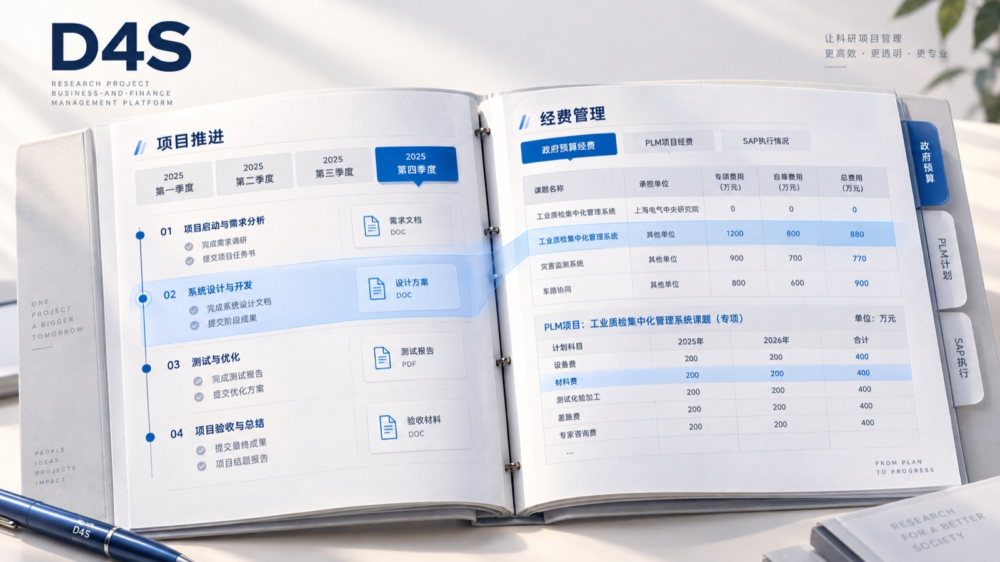
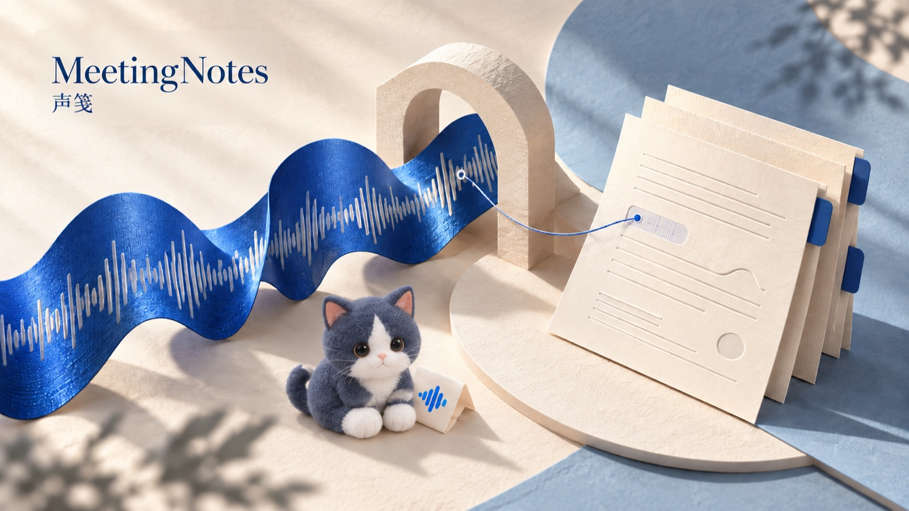
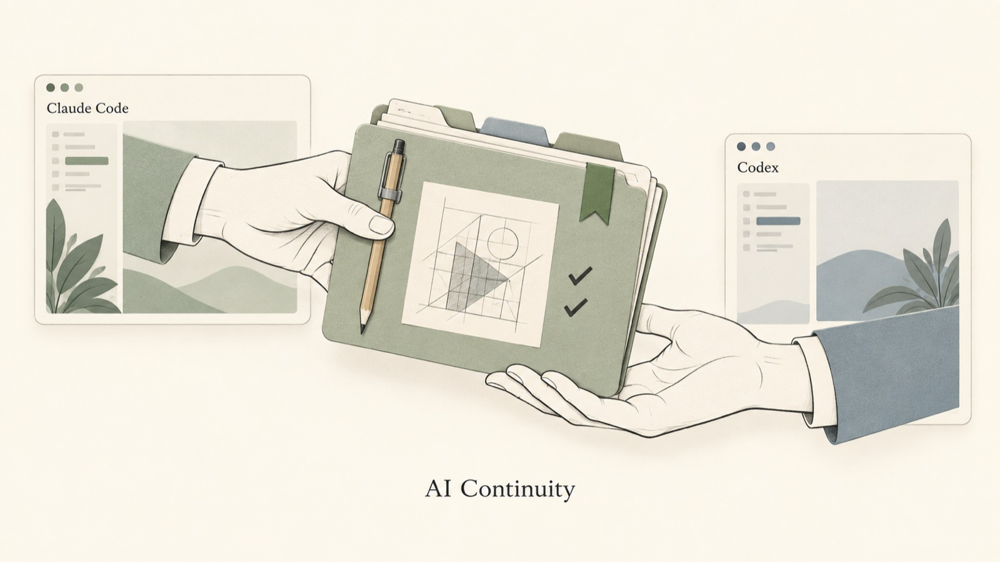
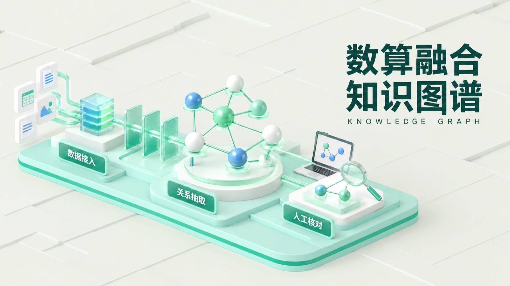
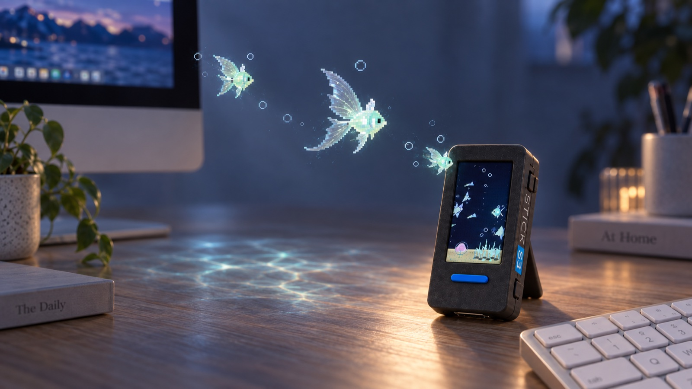

工业智能语义基座（新窗口）
让算法给出结论时，工程师仍看得见证据、留得住判断。
服务方向
Hi, I'm Mo Xiuwen
求职方向：AI产品/交互设计
过去两年，我参与工业 AI 产品的业务梳理与方案设计，重点解决数据处理和质量分析中的问题：哪些重复工作可以交给 AI，哪些关键步骤需要人确认，分析结果怎样供工程师核对。也通过独立 AI 项目，实践需求定义、原型制作和功能验证。
设计经验
项目实践
AI 项目
让算法给出结论时，工程师仍看得见证据、留得住判断。

连接科研项目的目标、经费与交付。

把长会议整理成可回查的纪要。让会议里的重要信息，留下来，也找得到。

在 Claude Code 和 Codex 之间切换，也能接着上次的决定继续做。
把分散的能力，组织成一条可构建的 Agent 路径。

从散落的数据，走到可以理解的业务关系。
让 AI 主动联系有分寸：记得要跟进的事，也懂得在未获回应时停下。

从想法到可交互实物，把养成体验做进掌心。
三维、动态与大屏作品 · 按主题浏览
用造型、空间与运动，让想法有形，让界面有回应。
把分散数据组织成清晰态势，支持快速研判与指挥调度。
About / 莫秀文
让 AI 在真实业务中发挥作用
从用户任务与业务流程出发，明确 AI 与人的分工，把需求转化为可落地的方案。
从方案到可用
结合数据与技术条件，通过原型和反馈持续验证，让复杂功能清晰易用，让 AI 的边界与异常处理有据可循。
持续构建与验证跨 Agent 上下文、会议整理、桌面 AI 与轻量硬件体验。
负责工业智能语义基座的全流程设计。
参与质量分析 Agent、智能体平台和研发管理系统的交互与体验设计。
在政务、社会治理与矛盾调解产品中，积累多角色协作与复杂业务交互经验。
建立视觉与交互基础，从界面呈现逐渐走向产品逻辑。
Beyond the Screen
工作之外，也在试着把新的想法做出来：走进科技展，与创客交流，也通过三维探索和插画，把观察与想象变成具体的表达。
Get in Touch
欢迎交流 AI 产品岗位、项目合作，以及有意思的产品想法。
m1941696989@gmail.com邮件可直接打开你的邮件应用，也可以复制地址联系我。